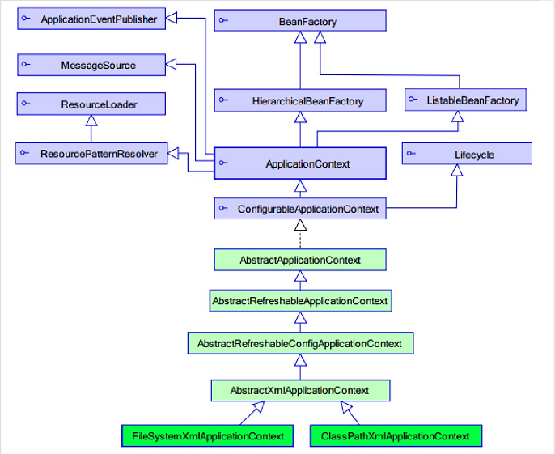

Spring框架的学习笔记。
IoC(Inversion of Control)控制反转，又叫DI(Dependency Injection)依赖注入，是一个流程，对象可以通过这个流程来定义他们在运行时需要用到的其他对象（依赖），这些依赖的对象可以是构造方法中的参数，可以是工厂方法的返回值，可以是一个带有set方法的property。IoC容器在创建bean的时候将这些依赖注入到这个bean中。这个流程和正常流程是相反的，既我们将创将对象和注入依赖的控制权交给了容器，所以叫作控制反转。
面向类的编程 => 面向接口的编程 => 工厂模式 => 工厂模式+反射+配置文件实现程序解耦
传统方式我们面向类编程，一个类型的引用只能对应该类型的对象例如：
1 MyClass myClass = new MyClass();
经过改进后我们面向接口编程，一个接口类型的引用可以指向实现该接口的多种类型对象（多态）。
1 MyInterface myClass = new MyClassImplMyInterface();
这样接口和实现类耦合度过高，当我们要换其他实现类的时候必须修改源码。
为了满足程序设计的OCP原则，在尽量不修改程序源码的基础上对程序进行扩展，我们使用工厂模式，创建工厂类，利用工厂得到对应的对象，这时接口和实现类没有了耦合，但是当我们要更换实现类的时候需要修改工厂里的代码。
Spring IoC容器的出现让我们只需要修改配置文件，就可以轻松的替换一个bean对象的实现类，Ioc容器通过解析xml文件中bean的配置信息，拿到需要创建bean对象的类型信息，然后使用工厂类通过反射创建该类型的实例然后返回给用户。当我们需要修改一个bean的实现类的时候，只需要修改xml配置文件就可以了。
Ioc控制翻转：将创建对象的控制权交由Ioc容器管理。
DI依赖注入：在创建对象时自动注入对象的依赖，如设置属性的值。
BeanFactory: 老版本工厂类
ApplicationContext: 新版本工厂类，现在都用新版本的。

ApplicationContext接口继承了BeanFactory接口，BeanFactory和ApplicationContext的区别：
BeanFactory在调用getBean()方法的时候才会生成类的实例。
ApplicationContex在加载配置文件的时候就将Spring管理的类实例化。
ClassPathXmlApplicationContext: 用来加载类路径下的xml配置文件。
FileSystemXmlApplicationContext: 用来加载磁盘上的xml配置文件。
1 2 ApplicationContext applicationContext = new ClassPathXmlApplicationContext("applicationContext.xml" ); MyClass myClass = (MyClass)applicationContext.getBean("MyClassBeanID" );
1 2 3 4 5 public class Bean public Bean () } }
1 <bean id ="bean" class ="com.xinxing.Bean" />
1 2 3 4 5 6 public class StaticBeanFactory public static Bean staticBeanFactory () return new Bean(); } }
1 <bean id ="bean" class ="com.xinxing.StaticBeanFactory" factory-method ="staticBeanFactory" />
1 2 3 4 5 6 public class BeanFactory public Bean beanFactory () return new Bean(); } }
1 2 <bean id ="beanFactory" class ="com.xinxing.BeanFactory" /> <bean id ="bean" factory-bean ="beanFactory" factory-method ="beanFactory" />
id: 使用了唯一约束，里面不能出现特殊字符。
name: 没有唯一约束，可以出现特殊字符，通常会在Spring和struts1框架整合时遇到。
init-method: Bean版初始化时候执行的方法。
destroy-methos：Bean被关闭时候执行的方法。
1 <bean id ="person" class ="com.xinxng.Person" init-method ="myInitMethod" destroy-method ="myDestroyMethod" />
scope：Bean的作用范围
singleton：默认的，Spring会采用单例模式创建这个对象。
prototype：多例模式。
request：应用在web项目中，Spring创建Bean后会放入到request范围中。
session：应用在web项目中，Spring创建Bean后会放入到session范围中。
globalsession：应用在web项目中，必须在porlet环境下使用。
1 <bean id ="person" class ="com.xinxng.Person" scope ="prototype" />
1 2 3 4 5 6 spring-bean-x.x.x.RELEASE.jar spring-context-x.x.x.RELEASE.jar spring-core-x.x.x.RELEASE.jar spring-expression-x.x.x.RELEASE.jar com.springsource.org.apache.commons.logging-x.x.x.jar com.springsource.org.apache.log4j-x.x.x.jar
导入beans 约束，参考官方文档：9.1.4. The beans schema
1 2 3 4 5 6 7 8 9 10 11 12 <?xml version="1.0" encoding="UTF-8"?> <beans xmlns ="http://www.springframework.org/schema/beans" xmlns:xsi ="http://www.w3.org/2001/XMLSchema-instance" xsi:schemaLocation =" http://www.springframework.org/schema/beans http://www.springframework.org/schema/beans/spring-beans.xsd" > <bean id ="foo" class ="x.y.Foo" > <meta key ="cacheName" value ="foo" /> <property name ="name" value ="Rick" /> </bean > </beans >
1 2 3 4 5 6 7 8 9 10 11 12 13 14 15 public class Person private String name; private int age; private Person child; public Person (String name, int age, Person child) this .name = name; this .age = age; this .child = child; } public void Hello () System.out.println(name + age + child); } }
1 2 3 4 5 <bean id ="person1" class ="com.xinxing.Person" > <constructor-arg name ="name" , value ="xinxing" /> <constructor-arg name ="age" , value ="10" /> <constructor-arg name ="child" , ref ="childID" /> </bean >
1 2 3 4 5 6 7 8 9 10 11 12 13 14 15 16 17 18 19 public class Person private String name; private int age; private Person child; public void set (String name) this .name = name; } public void set (int age) this .age = age; } public void set (Person child) this .child = child; } public void Hello () System.out.println(name + age + child); } }
1 2 3 4 5 6 <bean id ="person2" class ="com.xinxing.Person" > <property name ="name" value ="xinxing" /> <property name ="age" value ="10" /> <property name ="child" ref ="person1" /> </bean >
添加p名称空间约束xmlns:p="http://www.springframework.org/schema/p"
1 2 3 4 5 6 7 8 9 10 <?xml version="1.0" encoding="UTF-8"?> <beans xmlns ="http://www.springframework.org/schema/beans" xmlns:p ="http://www.springframework.org/schema/p" xmlns:xsi ="http://www.w3.org/2001/XMLSchema-instance" xsi:schemaLocation =" http://www.springframework.org/schema/beans http://www.springframework.org/schema/beans/spring-beans.xsd" > <bean id ="person3" class ="com.xinxing.Person" p:name ="xinxing" p:age ="10" p:child-ref ="person2" > </beans >
SpEL：Spring Expression Language
参考：4. Spring Expression Language (SpEL)
1 2 3 4 5 <bean id ="person4" class ="com.xinxing.Person" > <property name ="name" value ="#{person3.getName}" /> <property name ="age" value ="#{person3.getAge()}" /> <property name ="chile" value ="#{person3}" /> </bean >
1 2 3 4 5 6 7 8 9 10 11 12 13 14 15 16 17 18 19 20 21 22 23 public class CollectionBean private String[] arrs; private List<String> list; private Set<String> set; private Map<String, String> map; public void setArrs (String[] arrs) this .arrs = arrs; } public void setList (List<String> list) this .list = list; } public void setSet (Set<String> set) this .set = set; } public void setMap (Map<String, String> map) this .map = map; } public void Hello () System.out.println(arrs + list + set + map); } }
1 2 3 4 5 6 7 8 9 10 11 12 13 14 15 16 17 18 19 20 21 22 23 24 25 26 27 28 29 30 31 32 33 <bean id ="collectionBean" class ="com.xinxing.CollectionBean" > <property name ="arrs" > <list > 444<value > xinxing1</value > 444<value > xinxing2</value > </list > </property > <property name ="list" > <list > 444<value > xinxing1</value > 444<value > xinxing2</value > </list > </property > <property name ="set" > <set > 444<value > xinxing1</value > 444<value > xinxing2</value > </set > </property > <property name ="map" > <map > 444<entry key ="1" , value ="xinxing1" /> 444<entry key ="2" , value ="xinxing2" /> </map > </property > </bean >
导入context 约束，参考官方文档：9.1.3. The context schema
1 2 3 4 5 6 7 8 <?xml version="1.0" encoding="UTF-8"?> <beans xmlns ="http://www.springframework.org/schema/beans" xmlns:xsi ="http://www.w3.org/2001/XMLSchema-instance" xmlns:context ="http://www.springframework.org/schema/context" xsi:schemaLocation =" http://www.springframework.org/schema/beans http://www.springframework.org/schema/beans/spring-beans.xsd http://www.springframework.org/schema/context http://www.springframework.org/schema/context/spring-context.xsd" ></beans >
1 <context:component-scan base-package ="com.xinxing.package" />
@Component作用在类上，用于给对应类的对象取一个Id。
1 @Component (value="Id" ) == <bean id="Id" class "com.xinxng.ClassName" />
1 2 3 4 5 6 @Component (value="userService" )public class UserServiceImpl implements UserService public void Hello () } }
@Component如果不加value属性，默认以类名首字母小写 作为对象名。
Spring提供三个和@Component功能一样的衍生注解，分别应用在不同的层次中：
@Controller ：作用在Web层的类上。
@Service ：作用在Service层的类上。
@Repository ：作用在Dao层的类上。
@Scope作用在类上，用于指定对象的作用范围：
singleton：默认单例模式。
prototype：多例模式。
1 2 3 4 5 6 7 @Component (value="userService" )@Scope (value="prototype" )public class UserServiceImpl implements UserService public void Hello () } }
@Value作用在属性上，用于基本数据类型 的注入，使用注解方式注入属性可以不提供set方法。
1 2 3 4 5 6 7 8 9 10 11 @Component (value="userService" )public class UserServiceImpl implements UserService @Value (value="xinxing" ) private String name; public void Hello () } }
@Autowired作用在属性上，用于对象属性的注入。
@Autowired注解单独使用时会按照类型自动注入对象，想要按照对象ID注入，必须在下面加@Qualifier(value=“ID”)注解，这两注解一起使用时可以完成按照对象ID注入。
1 2 3 4 5 6 7 @Repository (value="userDao" )public class UserDaoImpl implements UserDao @Override public void save () } }
1 2 3 4 5 6 7 8 9 10 11 @Service (value="userService" )public class UserServiceImpl implements UserService @Autowired @Qualifier (value="userDao" ) private UserDao userDao; public void Hello () userDao.save(); } }
@Resource是java提供的一个注解，在javax.annotation包中，Spring框架也支持这个注解，可以完成@Autowired+@Qualifier(value=“ID”)一样的功能，@Resource可以在Ioc容器中按照对象ID找到对应对象然后注入。
1 2 3 4 5 6 7 8 9 10 @Service (value="userService" )public class UserServiceImpl implements UserService @Resource (name="userDao" ) private UserDao userDao; public void Hello () userDao.save(); } }
@PostConstruct是java提供的注解在javax.annotation包中，作用在方法上指定对象的初始化方法，相当于bean标签里的init-method属性。
1 2 3 4 @PastConstruct public void init () }
@PreDestroy是java提供的注解在javax.annotation包中，作用在方法上指定对象的销毁方法，相当于bean标签的的destroy-method属性。
1 2 3 4 @PreDestroy public void destroy () }
applicationContext1.xml
1 <import resource ="applicationContext2.xml" />
新建applicationContext对象的时候向里面传入多个配置文件，相当于调用接收可变参数的构造方法。
1 2 3 public void demo () ApplicationContext applicationContext = new ClassPathXmlApplicationContext("applicationContext1.xml" , "applicationContext2.xml" ) }
我们将前端控制器配置好后开始往项目中整合Spring框架，原来在表现层中需要自己new一个服务层的服务对象，然后调用服务，现在这个服务层的服务对象应该交由Spring管理，所以我们执行下面的操作。
将Spring的4个核心包导入项目：Beans，Core，Context，SpEL，然后导入loging，log4j一共6个jar包。
在src下创建Spring配置文件applicationContext.xml，在配置文件中配置Service层相应业务的Bean
1 <bean id ="customerService" class ="com.xinxing.CustomerServiceImpl" />
这样我们就将Service层中的CustomerService对象交由Spring管理。
在表现层中我们需要使用CustomerService对象来调用它的服务，想要得到CustomerService对象，我们就需要创建一个Spring工厂，然后通过Spring工厂得到CustomerService对象，表现层代码如下：
1 2 3 4 5 6 public class Controller public String save () ApplicationContext ac = new ClassPathXmlApplicationContext("applicationContext.xml" ); Customerservice cs = (CustomerService)ac.getBean("customerService" ); } }
但是表现层的控制器对象不是由Spring创建的，是由表现层框架创建的，每当网页发来一个请求，表现层框架就会调用这个Controller来处理请求，但是，每次来一个请求就需要加载Spring配置文件创建一次工厂来一个请求就需要创建一个工厂，这样会制造出很多无用的Sping工厂造成资源浪费，性能也是相当低的。
要解决上面的问题就需要用到Spring对Web项目的整合功能。
Web容器在启动时会为每个Web应用创建一个ServletContext对象，ServletContext对象与Web应用具有同样的生命周期。ServletConfig对象中维护了ServletContext的引用，开发人员在编写Servlet时，可以通过ServletConfig.getServletContext方法获得ServletContext对象。由于一个Web应用中的所有Servlet共享同一个ServletContext对象，因此Servlet对象之间可以通过ServletContext对象来实现通讯。ServletContext对象通常也被称之为Context域对象
补充：一个类或一个控制器就相当于一个Servlet，一个部署在Tomcat上的war包就相当于一个Web应用，可见一个Web应用中可以包含很多Servlet。
Spring的ServletContext对象监听器会在ServletContext对象被创建时执行我们配置好的方法，而ServletContext对象会在Web容器启动时被创建，所以通过配置ServletContext监听器我们可以在Web容器启动时加载Spring中配置好的对象，而且对象只被加载一次。
需要在web.xml中配置监听器：
1 2 3 <listener > 4<listener-class > org.springframework.web.context.ContextLoaderListener</listener-class > </listener >
ContextLoaderListener默认情况下只能加载WEB-INF文件下的Spring配置文件，我们需要配置一下加载路径：
1 2 3 4 <context-param > 4<param-name > contextConfigLocation</param-name > <param-value > classpath:applicationContext.xml</param-value > </context-param >
补充：
src不是classpath， WEB-INF/classes和WEB-INF/lib才是classpath，WEB-INF/ 是资源目录, 客户端不能直接访问。
WEB-INF/lib和WEB-INF/classes同属classpath，两者的访问优先级为: lib>classes
WEB-INF/classes目录存放src目录里java文件编译之后的class文件，xml、properties等资源配置文件，这是一个定位资源的入口。
classpath 和 classpath* 区别：
1 2 classpath：只会到你的class路径中查找找文件; classpath*：不仅包含class路径，还包括jar文件中(class路径)进行
在Maven项目中这个classes文件被移到了target文件夹下，编译完成的class、xml和properties文件都被放到了target/classes文件里，classpath指的是target/classes文件夹。
ServletContext监听器加载完配置文件后，会把相应的Web工厂对象放到ServletContext对象中去。修改前端控制器代码：
1 2 3 4 5 6 7 8 public class Controller public String save () ServletContext sc = ServletActionContext.getServletContext(); WebApplicationContext ac = WebApplicationContextUtils.getWebApplicationContext(sc); Customerservice cs = (CustomerService)ac.getBean("customerService" ); } }
补充：Web应用处理业务流程：
客户在网页操作发起业务请求，用户数据从网页传递到表现层，表现层调用相应的Controller处理数据然后完成，比如在Controller中会调用服务层的服务，服务层返回后跳转到操作成功页面，然后数据会被传递到服务层，服务层对数据做相应的处理完成业务逻辑，如果需要，服务层会调用持久层的服务把数据传递到持久层，持久层将数据保存在数据库，最后完成整个业务流程。
数据会从表现层 => 服务层 => 持久层。
利用Spring Ioc向测试类中注入需要测试的类。
1）引入Junit的依赖包。
2）引入spring-test-x.x.x.RELEASE.jar包。
3）使用注解在测试类中引入需要测试的类。
1 2 3 4 5 6 7 8 9 10 11 12 13 14 15 16 17 import org.junit.Test;import org.junit.runner.RunWith;import org.springframework.test.context.ContextConfiguration;import org.springframework.test.context.junit4.SpringJUnit4ClassRunner;@RunWith (SpringJUnit4ClassRunner.class ) @ContextConfiguration("classpath:applicationContext.xml") public class Test @Resource (name="userService" ) private UserService userService; @Test public void demo () userService.sayHello(); } }
AOP(Aspect-Oriented Programming)面向切面编程，我们知道，面向对象的特点是继承、多态和封装。而封装就要求将功能分散到不同的对象中去，这在软件设计中往往称为职责分配。实际上也就是说，让不同的类设计不同的方法。这样代码就分散到一个个的类中去了。这样做的好处是降低了代码的复杂程度，使类可重用。
但是人们也发现，在分散代码的同时，也增加了代码的重复性。什么意思呢？比如说，我们在两个类中，可能都需要在每个方法中做日志。按面向对象的设计方法，我们就必须在两个类的方法中都加入日志的内容。也许他们是完全相同的，但就是因为面向对象的设计让类与类之间无法联系，而不能将这些重复的代码统一起来。
也许有人会说，那好办啊，我们可以将这段代码写在一个独立的类独立的方法里，然后再在这两个类中调用。但是，这样一来，这两个类跟我们上面提到的独立的类就有耦合了，它的改变会影响这两个类。那么，有没有什么办法，能让我们在需要的时候，随意地加入代码呢？这种在运行时，动态地将代码切入到类的指定方法、指定位置上的编程思想就是面向切面的编程。
一般而言，我们管切入到指定类指定方法的代码片段称为切面 ，而切入到哪些类、哪些方法则叫切入点 。有了AOP，我们就可以把几个类共有的代码，抽取到一个切片中，等到需要时再切入对象中去，从而改变其原有的行为。
这样看来，AOP其实只是OOP的补充而已。OOP从横向上区分出一个个的类来，而AOP则从纵向上向对象中加入特定的代码。有了AOP，OOP变得立体了。如果加上时间维度，AOP使OOP由原来的二维变为三维了，由平面变成立体了。从技术上来说，AOP基本上是通过代理机制实现的。 AOP在编程历史上可以说是里程碑式的，对OOP编程是一种十分有益的补充。AOP采用横向抽取机制，取代了传统纵向继承体系结构，提高了代码的重用性。
AOP底层使用动态代理技术实现，提供两种动态代理方式：
基于JDK的动态代理：必须是面向接口的，只有实现了具体接口的类才能生成代理对象。
基于CGLIB的动态代理：对于没有实现接口的类，也可以产生代理，产生这个类的之类的方式。
AOP中根据类是否实现接口来采用上面两种动态代理的方式。
1 2 3 4 public interface UserDao public void save () public void update () }
1 2 3 4 5 6 7 8 9 10 11 12 public class UserDatImpl implements UserDat @Override public void save () System.out.println("save user data..." ); } @Override public void update () System.out.println("update user data..." ); } }
需求：在UserDao的save()方法执行之前打印日志。由于UserDao是接口，所以我们可以使用基于JDK的动态代理。
首先创建一个工具类，类里使用Proxy类创建代理对象然后返回，Proxy中的静态方法newProxyInstance中必须要求传入目标对象实现的接口，所以使用JDK Proxy类实现动态代理要求目标对象必须要有实现的接口。
1 2 3 4 5 6 7 8 9 10 11 12 13 14 15 16 17 18 19 20 21 22 23 24 25 26 public class MyProxyUtils public static UserDao getProxy (final UserDao dao) UserDao proxy = (UserDao)Proxy.newProxyInstance(dao.getClass().getClassLoader(), dao.getClass().getInterfaces(), new InvocationHandler() { @Override public Object invoke (Object proxy, Method method, Object[] args) throws Throwable if ("save" .equals(method.getName())) { System.out.println("记录日志" ); } return method.invoke(dao, args); } }); return proxy; } }
1 2 3 4 5 6 7 8 9 10 11 12 13 14 public class JDKProxyDemo public void run () UserDao dao = new UserDatImpl(); dao.save(); dao.update(); UserDao proxy = MyProxyUtils.getProxy(dao); proxy.save(); proxy.update(); } }
Spring核心包spring-core-x.x.x.RELEASE.jar中包含CGLIB的开发包。CBLIB内部是使用生成子类的方法生成代理对象，所以不要求目标类实现接口。
1 2 3 4 5 6 7 8 public class Book public void save () } public void update () } }
1 2 3 4 5 6 7 8 9 10 11 12 13 14 15 16 17 18 19 20 21 22 23 24 25 26 27 28 29 public class MyCglibUtils public static Book getProxy (Book book) Enhancer enhancer = new Enhancer(); enhancer.setSuperclass(book.getClass()); enhancer.setCallback(new MethodInterceptor() { @Override public Object intercept (Object proxy, Method method, Object[] args, MethodProxy methodProxy) throws Throwable if (method.getName().equals("save" )) { } return methodProxy.invokeSuper(proxy, args) } }); Book proxy = (Book)enhancer.create(); return proxy; } }
1 2 3 4 5 6 7 8 9 10 11 12 13 public class CglibProxyDemo publci void run () { Book book = new Book(); book.save(); book.update(); Book proxy = MyCglibUtils.getProxy(book); proxy.save(); proxy.update(); } }
Aspect (切面)：切入点和我们对切入点做的增强功能形成了一个切面，切入点需要配置，增强功能需要我们自己编写。Join point (连接点)：一个类中的所有方法都可以成为连结点Advice (通知/增强)：我们对切入点添加的功能。Pointcut (切入点)：我们对一些方法(连接点)进行增强，这个增强的连结点就是切入点。Introduction (引介)：引介是一种特殊的通知，可以在运行期为类动态地添加一些方法或属性。Target object (目标对象)：我们要对其创建代理的对象。AOP proxy (代理)：代理对象，JDK动态代理对象或者CGLIB动态代理对象。Weaving (织入)：织入是一个过程，是指给目标对象的切入点添加新的功能，然后创建代理对象的过程。
6个核心开发包
2个AOP开发包
1 2 spring-aop-x.x.x.RELEASE.jar com.springsource.org.aopalliance-x.x.x.jar
2个AspectJ开发包
1 2 com.springsource.org.aspectj.weaver-x.x.x.RELEASE.jar spring-aspects-x.x.x.RELEASE.jar
导入AOP约束，参考官方文档：9.1.2. The aop schema
applicationContext.xml
1 2 3 4 5 6 7 8 <?xml version="1.0" encoding="UTF-8"?> <beans xmlns ="http://www.springframework.org/schema/beans" xmlns:xsi ="http://www.w3.org/2001/XMLSchema-instance" xmlns:aop ="http://www.springframework.org/schema/aop" xsi:schemaLocation =" http://www.springframework.org/schema/beans http://www.springframework.org/schema/beans/spring-beans.xsd http://www.springframework.org/schema/aop http://www.springframework.org/schema/aop/spring-aop.xsd" ></beans >
CustomerDao.jave
1 2 3 4 public Interface CustomerDao { public void save () public void update () }
CustomerDaoImpl.java
1 2 3 4 5 6 7 8 public class CustomerDaoImpl implements CustomerDao public void save () } public void update () } }
applicationContext.xml
1 <bean id="customerDao" class "com.xinxing.CustomerDaoImpl" />
需求：我们有一个CustomerDaoImpl类实现了CustomerDao接口的save(), update()方法，我们想要在save()方法执行前打印日志，现在需要编写增强代码。
切面类 MyAspectXml.java ，MyAspectXml类的对象应该交给IoC容器管理。
1 2 3 4 5 6 7 public class MyAspectXml public void log () } }
将切面类交给容器管理。
1 2 <bean id ="myAspectXml" class ="com.xinxing.MyAspectXml" />
1 2 3 4 5 6 7 8 9 <aop:config > <aop:aspect ref ="myAspectXml" > <aop:before method ="log" pointcut ="execution(public void com.xinxing.CustomerDaoImpl.save())" /> </aop:aspect > </aop:config >
切入点表达式的固定格式如下所示：
1 execution([修饰符] 返回值类型 包名.类名.方法名(参数))
1）修饰符，如public，可以省略不写，其他 部分都不能省略。
2）返回值类型，*代表任意返回值类型。
3）包名，如 com.xinxing，有下面几种写法：
com.*表示在com包中搜索。*..*表示在任意包下搜索。
4）类名，如CustomerDaoImpl，有下面几种写法：
Customer*表示以Customer开头的类名。*DaoImpl表示以DaoImpl结尾的类名
5）方法名，如save，有下面几种写法：
*表示所有方法。save*()表示以save开头的方法。*save()表示以save结尾的方法。
6）参数名，如(Sring, int)，有下面几种写法：
(*)表示任意的一个参数。(..)表示任意参数，相当于可变参数。
在目标对象方法执行之前执行的增强方法。
1 <aop:before method ="adviceMethod" pointcut-ref ="myPointcut" />
应用：验证方法的传入参数。
在目标对象方法执行之后执行的增强方法。如果目标对象方法出现异常，增强方法也会执行。
1 <aop:after method ="adviceMethod" pointcut-ref ="myPointcut" />
应用：释放资源。
目标对象方法正常返回后执行的增强方法。
1 <aop:after-returning method ="adviceMethod" pointcut-ref ="myPointcut" />
应用：修改方法返回值。
目标对象方法抛出异常后才执行增强方法。
1 <aop:after-throwing method ="adviceMethod" pointcut-ref ="myPointcut" />
应用：包装异常信息。
在目标对象方法执行的前后执行增强方法，默认情况下目标对象的方法不执行 ，需要手动让目标对象的方法执行。
1 <aop:around method ="around" pointcut-ref ="myPointcut" />
1 2 3 4 5 6 7 8 9 10 11 12 public void around (ProceedingJoinPoint joinPoint) try { joinPoint.proceed(); } catch (Throwable e) { e.printStackTrace(); } }
应用：事务管理，方法执行前开启事务，方法执行后提交事务。
和Xml方式的一样。
这个XML文件是最全的包含了注解、AOP和事务的约束。
1 2 3 4 5 6 7 8 9 10 11 12 13 14 15 16 <?xml version="1.0" encoding="UTF-8"?> <beans xmlns ="http://www.springframework.org/schema/beans" xmlns:xsi ="http://www.w3.org/2001/XMLSchema-instance" xmlns:context ="http://www.springframework.org/schema/context" xmlns:aop ="http://www.springframework.org/schema/aop" xmlns:tx ="http://www.springframework.org/schema/tx" xsi:schemaLocation ="http://www.springframework.org/schema/beans http://www.springframework.org/schema/beans/spring-beans.xsd http://www.springframework.org/schema/context http://www.springframework.org/schema/context/spring-context.xsd http://www.springframework.org/schema/aop http://www.springframework.org/schema/aop/spring-aop.xsd http://www.springframework.org/schema/tx http://www.springframework.org/schema/tx/spring-tx.xsd" >4 </beans >
1 2 3 4 public interface CustomerDao public void save () public void update () }
1 2 3 4 5 6 7 8 public CustomerDaoImpl implements CustomerDao { public void save () } public void update () } }
1 2 <bean id ="customerDao" class ="com.xinxing.CustomerDaoImpl" />
编写测试类：
1 2 3 4 5 6 7 8 9 10 11 12 13 14 15 16 17 import org.junit.Test;import org.junit.runner.Runwith;import org.springframework.test.context.junit4.SpringJUnit4ClassRunner;@RunWith (SpringJUnit4ClassRunner.class ) @ContextConfiguration("classpath:applicationContext.xml") public class Test @Resource (name="customerDao" ) private CustomerDao customerDao; @Test public void run1 () customerDao.save(); customerDao.update(); } }
1 2 3 4 5 public class MyAspectAnnotation public void log () } }
将切面类交给容器管理
1 2 <bean id ="myAspectAnnotation" class ="com.xinxing.MyAspectAnnotation" />
@Before : 前置通知
@After : 后置通知
@AfterReturing : 正常返回通知
@AfterThrowing : 异常返回通知
@Around : 环绕通知
value="execution(public void com.xinxing.CustomerDaoImpl.save())"
1 2 3 4 5 6 7 8 9 10 11 12 13 14 15 16 import org.aspectj.lang.annotation.Aspectj;import org.aspectj.lang.annotation.Before;@Aspect public class MyAspectAnnotation @Before (value="execution(public void com.xinxing.CustomerDaoImpl.save())" ) public void log () } @After (value="execution(public void com.xinxing.CustomerDaoImpl.update())" ) public void after () } }
1 2 3 4 5 6 7 8 9 10 11 12 13 14 15 16 17 18 19 20 21 22 23 @Aspect public class MyAspectAnnotation @Pointcut (value="execution(public void com.xinxing.CustomerDaoImpl.save())" ) public void fn () @Before (value="MyAspectAnnotation.fn()" ) public void before () @After (value="MyAspectAnnotation.fn()" ) public void after () @Around (value="MyAspectAnnotation.fn()" ) public void around (ProceedingJoinPoint joinPoint) try { joinPoint.proceed(); } catch (Throwable e) { e.printStacktrace(); } } }
1 2 <aop:aspectj-autoproxy />
6个Spring核心开发包
1个Spring-aop开发包
3个JDBC模板需要的jar包
MySQL数据库驱动
Spring-jdbc.jar
Spring-tx.jar
1 2 3 4 5 6 7 8 9 10 11 12 13 14 15 16 17 18 19 20 21 import org.junit.Test;import org.springframework.jdbc.core.JdbcTemplate;import org.springframework.jdbc.datasource.DriverManagerDataSource;public class JDBCTest @Test public void run () DriverManagerDataSource dataSource = new DriverManagerDataSource(); dataSource.setDriverClassName("com.mysql.jdbc.Driver" ); dataSource.setUrl("jdbc:mysql://192.168.3.86/springdb" ); dataSource.setUsername("root" ); dataSource.setPassword("astro" ); JdbcTemplate template = new JdbcTemplate(); template.setDataSource(dataSource); template.update("insert into t_account values (null,?,?)" , "xinxing" , 10000 ); } }
applicationContext.xml
1 2 3 4 5 6 7 8 9 10 11 12 <bean id ="dataSource" class ="org.springframework.jdbc.datasource.DriverManagerDataSource" > <property name ="driverClassName" value ="com.mysql.jdbc.Driver" /> <property name ="url" value ="jdbc:mysql://192.168.3.86/springdb" /> <property name ="username" value ="root" /> <property name ="password" value ="astro" /> </bean > <bean id ="jdbcTemplate" class ="org.springframework.jdbc.core.JdbcTemplate" > <property name ="dataSource" ref ="dataSource" /> </bean >
1 2 3 4 5 6 7 8 9 10 11 @RunWith (SpringJUnit4ClassRunner.class ) @ContextConfiguration("classpath:applicationContext.xml") public class JDBCTest01 @Resource (name = "jdbcTemplate" ) private JdbcTemplate jdbcTemplate; @Test public void run () jdbcTemplate.update("insert into t_account values (null,?,?)" , "xinxing1" , 20000 ); } }
导入两个依赖包:
com.springsource.org.apache.commons.dbcp-x.x.x.osgi.jar
com.springsource.org.apache.commons.pool-x.x.x.jar
在applicationContext.xml中配置DBCP连接池
1 2 3 4 5 6 7 <bean id ="dataSource" class ="org.apache.commons.dbcp2.BasicDataSource" > <property name ="driverClassName" value ="com.mysql.jdbc.Driver" /> <property name ="url" value ="jdbc:mysql://192.168.3.86/springdb" /> <property name ="username" value ="root" /> <property name ="password" value ="astro" /> </bean >
导入依赖：
com.springsource.com.mchange.v2.c3p0-x.x.x.x.jar
在applicationContext.xml中配置C3P0连接池
1 2 3 4 5 6 7 <bean id ="dataSource" class ="com.mchange.v2.c3p0.ComboPooledDataSource" > <property name ="driverClass" value ="com.mysql.jdbc.Driver" /> <property name ="jdbcUrl" value ="jdbc:mysql://192.168.3.86/springdb" /> <property name ="user" value ="root" /> <property name ="password" value ="astro" /> </bean >
1 2 3 4 5 6 7 8 9 10 11 12 13 14 @Test public void run () jdbcTemplate.update("insert into t_account values (null,?,?)" , "xinxing1" , 20000 ); } @Test public void run2 () jdbcTemplate.update("delete from t_account where id = ?" , 1 ); } @Test public void run1 () jdbcTemplate.update("update t_account set name = ? where id = ?" , "xx" , 2 ); }
1 2 3 4 5 @Test public void run () Account ac = jdbcTemplate.queryForObject("select * from t_account where id = ?" , new BeanMapper(), 2 ); System.out.println(ac); }
POJO类：
1 2 3 4 5 6 7 8 9 10 11 12 13 14 15 16 17 18 19 20 21 22 23 24 25 26 27 28 29 public class Account private Integer id; private String name; private Double money; public Integer getId () return id; } public void setId (Integer id) this .id = id; } public String getName () return name; } public void setName (String name) this .name = name; } public Double getMoney () return money; } public void setMoney (Double money) this .money = money; } }
手动封装数据，创建BeanMapper类，实现RowMapper接口：
1 2 3 4 5 6 7 8 9 10 11 class BeanMapper implements RowMapper <Account > public Account mapRow (ResultSet resultSet, int i) throws SQLException Account ac = new Account(); ac.setId(resultSet.getInt(1 )); ac.setName(resultSet.getString(2 )); ac.setMoney(resultSet.getDouble(3 )); return ac; } }
用匿名内部类的方法封装数据，和上面的一样
1 2 3 4 5 6 7 8 9 10 11 12 13 14 @Test public void run4 () List<Account> list = jdbcTemplate.query("select * from t_account" , new RowMapper<Account>() { public Account mapRow (ResultSet resultSet, int i) throws SQLException Account ac = new Account(); ac.setId(resultSet.getInt(1 )); ac.setName(resultSet.getString(2 )); ac.setMoney(resultSet.getDouble(3 )); return ac; } }); System.out.println(list); }
1）事务：是一个操作序列，这些操作要么都执行，要么都不执行，它是一个不可分割的工作单位。
2）事务的特性ACID：
原子性（Atomicity） ：事务作为一个整体被执行，包含在其中的对数据库的操作要么全部被执行，要么都不执行。一致性（Consistency） ：事务应确保数据库的状态从一个一致状态转变为另一个一致状态。一致状态 的含义是数据库中的数据应满足完整性约束。隔离性（Isolation） ：多个事务并发执行时，一个事务的执行不应影响其他事务的执行。持久性（Durability） ：已被提交的事务对数据库的修改应该永久保存在数据库中。
3）如果不考虑隔离性，引发安全性问题
读问题：
脏读：一个事务对数据进行了修改，修改还没有提交时，另外一个事务也访问这个数据，然后使用了这个数据。
不可重复读：在一个事务内多次读同一数据。在这个事务还没有结束时，另外一个事务也访问该同一数据。在第一个事务中的两次读数据之间，由于第二个事务的修改，第一个事务两次读到的的数据可能不一样的，称为是不可重复读。
幻读：第一个事务对一个表中全部数据行进行了修改，同时第二个事务向表中插入一行新数据。第一个事务的用户发现表中还有没有修改的数据行，就好象发生了幻觉一样。
写问题：
4）如何解决安全性问题
读问题：设置数据库隔离级别。
写问题：悲观锁和乐观锁。
5）事务隔离级别
未提交读(Read Uncommitted)：允许脏读，也就是可能读取到其他会话中未提交事务修改的数据。
提交读(Read Committed) ：只能读取到已经提交的数据。Oracle等多数数据库默认都是该级别 (不重复读)。可重复读(Repeated Read)：可重复读。在同一个事务内的查询都和事务开始时刻一致的，InnoDB默认级别。在SQL标准中，该隔离级别消除了不可重复读，但是还存在幻读。
串行读(Serializable)：完全串行化的读，每次读都需要获得表级共享锁，读写相互都会阻塞。
隔离级别
脏读(Dirty Read)
不可重复读(NonRepeatable Read)
幻读(Phantom Read)
未提交读(Read Uncommitted)
可能
可能
可能
提交读(Read Committed)
不可能
可能
可能
可重复读(Repeated Read)
不可能
不可能
可能
串行读(Serializable)
不可能
不可能
不可能
PlatformTransactionManager ：平台事务管理器(真正管理事务的类)。该接口有具体的实现类，根据不同的持久层框架，需要选择不同的实现类。TransactionDefinition ：事务定义信息(事务的隔离级别,传播行为,超时,只读)。ransactionStatus ：事务的状态。
PlatformTransactionManager根据TransactionDefinition定义的事务信息进行事务管理，在管理事务中产生一些状态记录到TransactionStatus中。
实现类：
DataSourceTransactionManager ：使用Spring的JDBC模板或者MyBatis框架时使用。HibernateTransactionManager ：使用Hibernate框架时使用。
常用方法：
void commit(TransactionStatus status)
TransactionStatus getTransaction(TransactionDefinition definition)
void rollback(TransactionStatus status)
事务隔离级别（Isolation）
static int ISOLATION_DEFAULT ：采用数据库默认隔离级别。static int ISOLATION_READ_UNCOMMITTED ：未提交读。
static int ISOLATION_READ_COMMITTED ：提交读。
static int ISOLATION_REPEATABLE_READ ：可重复读。
static int ISOLATION_SERIALIZABLE ：串行读。
事务传播行为（Propagation） 解决Service层之间方法调用时事务的管理问题。
假设业务层有两个方法A和B，A中调用B方法，则有：
PROPAGATION_REQUIRED （默认值）：保证有事务。A中有事务，使用A中的事务。如果没有，B就会开启一个新的事务，将A包含进来，默认值！！PROPAGATION_MANDATORY ：强制使用事务。A中有事务，使用A中的事务。如果A没有事务抛出异常。
PROPAGATION_REQUIRES_NEW ：保证使用一个新的事务。A中有事务，将A中的事务挂起，B创建一个新的事务。
PROPAGATION_NOT_SUPPORTED ：保证不支持事务。A中有事务，将A中的事务挂起。
PROPAGATION_NEVER ：保证没有事务。A中有事务，抛出异常。
PROPAGATION_NESTED ：使用嵌套型事务。当A执行之后，就会在这个位置设置一个保存点，如果B没有问题执行通过，如果B出现异常，运行客户根据需求回滚(选择回滚到保存点或者是最初始状态)。
6个IOC核心开发包。
4个AOP包。
1个C3P0包。
1个MySQL驱动包
2个JDBC事务包。
1个整合JUnit测试包。
1 2 3 4 5 6 7 8 9 10 11 12 13 14 15 <?xml version="1.0" encoding="UTF-8"?> <beans xmlns ="http://www.springframework.org/schema/beans" xmlns:xsi ="http://www.w3.org/2001/XMLSchema-instance" xmlns:context ="http://www.springframework.org/schema/context" xmlns:aop ="http://www.springframework.org/schema/aop" xmlns:tx ="http://www.springframework.org/schema/tx" xsi:schemaLocation ="http://www.springframework.org/schema/beans http://www.springframework.org/schema/beans/spring-beans.xsd http://www.springframework.org/schema/context http://www.springframework.org/schema/context/spring-context.xsd http://www.springframework.org/schema/aop http://www.springframework.org/schema/aop/spring-aop.xsd http://www.springframework.org/schema/tx http://www.springframework.org/schema/tx/spring-tx.xsd" ></beans >
Interface com.xinxing.tx.AccountService
1 2 3 4 5 package com.xinxing.tx;public interface AccountService void pay (int outId, int inId, double money) }
Class com.xinxing.tx.AccountServiceImpl
1 2 3 4 5 6 7 8 9 10 11 12 13 14 15 16 17 package com.xinxing.tx;public class AccountServiceImpl implements AccountService private AccountDao accountDao; public void setAccountDao (AccountDao accountDao) this .accountDao = accountDao; } public void pay (int outId, int inId, double money) accountDao.outMoney(outId, money); accountDao.inMoney(inId, money); } }
Interface com.xinxing.tx.AccountDao
1 2 3 4 5 6 package com.xinxing.tx;public interface AccountDao void outMoney (int id, double money) void inMoney (int id, double money) }
Class com.xinxing.tx.AccountDaoImpl
Spring提供了一个JdbcDaoSupport类里面可以根据数据库连接池自动为我们创建JdbcTemple模板类，可以直接继承该类简化开发。
1 2 3 4 5 6 7 8 9 10 11 12 13 14 15 16 17 18 19 20 21 22 23 24 package com.xinxing.tx;import org.springframework.jdbc.core.support.JdbcDaoSupport;public class AccountDaoImpl extends JdbcDaoSupport implements AccountDao public void outMoney (int id, double money) this .getJdbcTemplate().update("update t_account set money = money - ? where id = ?" , money, id); } public void inMoney (int id, double money) this .getJdbcTemplate().update("update t_account set money = money + ? where id = ?" , money, id); } }
JdbcDaoSupport类中可以根据数据库连接池创建JdbcTemplate模板类，所以在配置的时候只需要配置DataSource数据库连接池，然后将该类注入到JdbcDaoSupport的dataSource属性中去就可以。
1 2 3 4 5 6 7 8 9 10 11 12 13 14 15 16 <bean id ="accountService" class ="com.xinxing.tx.AccountServiceImpl" > <property name ="accountDao" ref ="accountDao" /> </bean > <bean id ="accountDao" class ="com.xinxing.tx.AccountDaoImpl" > <property name ="dataSource" ref ="dataSource" /> </bean > <bean id ="dataSource" class ="com.mchange.v2.c3p0.ComboPooledDataSource" > <property name ="driverClass" value ="com.mysql.jdbc.Driver" /> <property name ="jdbcUrl" value ="jdbc:mysql://192.168.3.86/springdb" /> <property name ="user" value ="root" /> <property name ="password" value ="astro" /> </bean >
1 2 3 4 5 6 7 8 9 10 11 12 13 14 15 16 17 18 import org.junit.Test;import org.junit.runner.RunWith;import org.springframework.test.context.ContextConfiguration;import org.springframework.test.context.junit4.SpringJUnit4ClassRunner;import javax.annotation.Resource;@RunWith (SpringJUnit4ClassRunner.class ) @ContextConfiguration("classpath:applicationContext.xml") public class Test01 @Resource (name = "accountService" ) private AccountService accountService; @Test public void run () accountService.pay(2 , 3 , 100 ); } }
环境搭建完成。
Spring编程时事务管理（不推荐使用）：手动编写代码完成事务管理。
Spring声明式事务管理（底层采用AOP技术，推荐使用）：通过配置的方式完成事务管理。
Spring为了简化事务管理的代码，提供了模板类 TransactionTemplate，所以手动编程的方式来管理事务，只需要使用该模板类即可。
Spring使用PlatformTransactionManager接口来管理事务，所以咱们需要使用到他的实现类：DataSourceTransactionManager 或者HibernateTransactionManager 。
1 2 3 4 <bean id ="transactionManager" class ="org.springframework.jdbc.datasource.DataSourceTransactionManager" > 4<property name ="dataSource" ref ="dataSource" /> </bean >
1 2 3 4 <bean id ="transactionTemplate" class ="org.springframework.transaction.support.TransactionTemplate" > 4<property name ="transactionManager" ref ="transactionManager" /> </bean >
AccountServiceImpl.java
1 2 3 4 private TransactionTemplate transactionTemplate;public void setTransactionTemplate (TransactionTemplate transactionTemplate) this .transactionTemplate = transactionTemplate; }
1 2 3 4 <bean id ="accountService" class ="com.itheima.demo1.AccountServiceImpl" > 4<property name ="accountDao" ref ="accountDao" /> 4<property name ="transactionTemplate" ref ="transactionTemplate" /> </bean >
AccountServiceImpl.java
1 2 3 4 5 6 7 8 9 10 11 12 13 14 15 16 17 18 19 private TransactionTemplate transactionTemplate;public void setTransactionTemplate (TransactionTemplate transactionTemplate) this .transactionTemplate = transactionTemplate; } public void pay (final String out, final String in, final double money) transactionTemplate.execute(new TransactionCallbackWithoutResult() { protected void doInTransactionWithoutResult (TransactionStatus status) accountDao.outMoney(out, money); int a = 10 /0 ; accountDao.inMoney(in, money); } }); }
声明式事务管理又分为两种：
基于AspectJ的XML方式的事务管理
基于AspectJ的注解方式的事务管理
1 2 3 4 <bean id ="transactionManager" class ="org.springframework.jdbc.datasource.DataSourceTransactionManager" > <property name ="dataSource" ref ="dataSource" /> </bean >
Spring中事务管理的切面类是现成的，我们只需要在xml文件中配置一下就可以使用。
1 2 3 4 5 6 7 8 <tx:advice id ="myAdvice" transaction-manager ="transactionManager" > <tx:attributes > <tx:method name ="pay*" isolation ="DEFAULT" propagation ="REQUIRED" /> </tx:attributes > </tx:advice >
<tx:method>标签中可以有很多属性：
name：必须有，指定哪些方法使用事务，可以用通配符表示如pay*表示所有以pay开头的方法。
propagation：事务传播行为。
isalation：事务隔离级别。
read-only：是否只读。
timout：超时信息。
rollback-for：发生哪些异常时回滚。
no-rollback-for：发生哪些异常时不回滚。
在<aop:config>标签中，如果是自己编写的切面类要使用<aop:aspect>配置切面，如果使用Spring提供的切面类要使用<aop:advisor>配置切面。
1 2 3 4 5 <aop:config > <aop:advisor advice-ref ="myAdvice" pointcut ="execution(public void com.xinxing.tx.AccountServiceImpl.pay(int,int,double))" /> </aop:config >
事务配置完成。
1 2 3 4 <bean id ="transactionManager" class ="org.springframework.jdbc.datasource.DataSourceTransactionManager" > <property name ="dataSource" ref ="dataSource" /> </bean >
1 2 <tx:annotation-driven transaction-manager ="transactionManager" />
如果在类上加@Transactional，类中的所有方法就都有事务了。
如果在方法上加@Transactional，只有该方法有事务。
和<tx:method>标签一样@Transactional同样可以设置事务的属性。